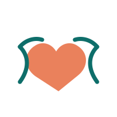
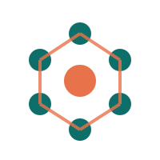

Povestea Asociației Buni Prieteni
Am pornit de la o convingere simplă: în fața cancerului, prietenia și sprijinul reciproc pot face o diferență la fel de importantă ca tratamentul medical.
Ultimele noutăți de la noi
Urmărește activitatea asociației — evenimente, ateliere și povești de speranță — chiar de pe pagina noastră.
De ce existăm
Asociația Buni Prieteni — împotriva cancerului a luat naștere în februarie 2021, la Oradea, din experiența personală a soților Alina și Sandu Dascăl, care au cunoscut ei înșiși încercarea bolii. Numele este un semn de recunoștință față de prietenii buni care le-au fost alături în acele momente. De aici s-a născut dorința de a oferi persoanelor diagnosticate cu cancer, din Oradea și din județul Bihor, un sprijin real, uman și continuu — nu doar în perioada tratamentului, ci pe tot parcursul acestei experiențe.
Ne dorim să fim acel prieten bun de care ai nevoie atunci când diagnosticul schimbă totul: cineva care ascultă, care informează corect și care rămâne alături, indiferent cât durează drumul spre vindecare. Este exact ce spune și motto-ul nostru — „conectați prin speranță”.

Misiune, viziune și valori
Misiune
Sprijinim persoanele afectate de cancer și familiile lor prin informare, sprijin emoțional și acces la resurse — prin activități gratuite, susținute de sponsori — pentru ca nimeni să nu treacă singur prin boală.
Viziune
O comunitate din Oradea și din județul Bihor în care fiecare persoană diagnosticată cu cancer are acces la sprijin uman, informație corectă și speranță reală.
Valori
Empatie, respect, transparență și implicare — principiile după care ne ghidăm în tot ce facem, zi de zi.

Oameni care aleg să rămână aproape
În spatele Buni Prieteni se află soții Alina și Sandu Dascăl, alături de voluntari și specialiști — medici, psihologi, nutriționiști și fizioterapeuți — care își dedică timpul și energia comunității noastre.
Împreună organizăm ateliere creative și de nutriție oncologică, întâlnirile din seria „Despre cancer, cu speranță” și campanii dedicate persoanelor afectate de cancer din județul Bihor.
Alătură-te echipei de voluntari